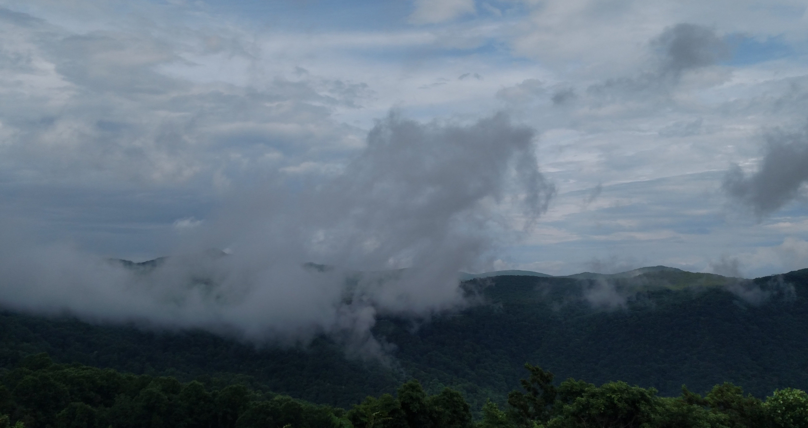

- Introduction Stirred by the pre-dawn twilight, the mists drift like chilled smoke from their hollows where they dwelled beneath the oak, brich, and pine communing with their nocturnal kin. As the stars retreat, the clouds' earthly sojourn comes to a close. The sun beckons them from beyond the distant ridge to abandon the mountain, rejoin the sky, and aid in the daily brewing of the weather.  Having been born and raised in the Appalachian Mountains of North Carolina, images like these populate my memory. It seems to me as good an initial introduction as any;
a memory from home.